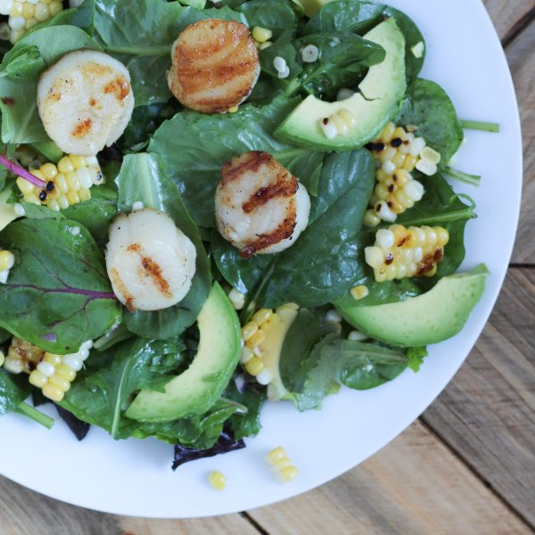

Grilled Scallops with Corn, Lime and Avocado Salad

Total Time
40 min
Nutrition (per serving)
698.8 kcalCalories
27.5 gProtein
40.2 gCarbs
51.6 gFat
Full nutrition table
| Calories | 698.8 kcal |
| Total fat | 51.6 g |
| Saturated fat | 12.5 g |
| Trans fat | 0.1 g |
| Cholesterol | 40.8 mg |
| Sodium | 714.5 mg |
| Carbohydrates | 40.2 g |
| Fiber | 10.9 g |
| Sugars | 9.2 g |
| Protein | 27.5 g |
| Potassium | 1391 mg |
| Calcium | 69.8 mg |
| Iron | 3.3 mg |
| Vitamin A | 360.9 IU |
| Vitamin C | 31.9 mg |
| Vitamin D | 1.7 IU |
Cookware
Ingredients
- 2avocados
- 4 earscorn
- 2limes
- 1 ½ lbsea scallops
- 2shallots
- 2 (5 oz) pkgsspring mix (mixed greens)
- black pepper
- cumin, ground
- extra virgin olive oil
- salt
- virgin coconut oil
Steps
- Heat a grill pan, outdoor grill, or skillet over medium-high heat.2 tbsp virgin coconut oil
- Wash and dry the fresh produce. (Skip the mixed greens if they came pre-washed.)2 limes
2 avocados
2 (5 oz) pkgs spring mix (mixed greens) - Lightly oil grates or pan. Remove husks and silks from corn. Grill corn, turning occasionally until corn begins to char (8-10 min). Set aside to cool.2 tbsp extra virgin olive oil
4 ears corn - While the corn cooks, peel and finely chop the shallot. Transfer to a medium bowl.2 shallots
- Juice the lime into the medium bowl; add olive oil, cumin, salt, and pepper and stir to combine.¼ cup extra virgin olive oil
½ tsp salt
½ tsp black pepper
1 tsp cumin - Pat scallops dry with paper towel. (If using an outdoor grill, thread scallops, side by side onto skewers so that scallops lie flat.) Drizzle scallops with olive oil, salt, and pepper. Grill scallops until grill marks appear, about 2-3 minutes; flip and cook other side, about 2 minutes. Cook in batches if necessary.1 ½ lb sea scallops
2 tbsp extra virgin olive oil
1 tsp salt
½ tsp black pepper - Working one ear at a time, hold the corn vertically inside a large bowl and slice the kernels away from the cob; discard the cob. Add the kernels to the salad dressing.
- Halve the avocado and remove pit. Thinly slice the flesh while still in the skin and then scoop out the slices using a spoon.
- To serve, toss lettuce with corn mixture and avocado, arrange on a plate and top with grilled scallops. Enjoy!